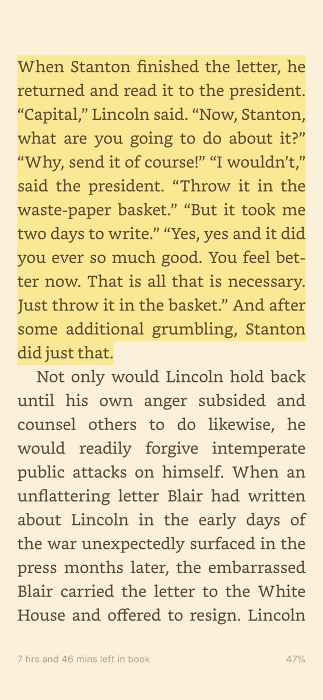

In Memoriam: Bill Craven [1. On Marnie Hughes-Warrington from ANU's History Department tweeting this address, I sent her an email as follows:
Subject: Seeking to contact Bill Craven
Hi Marnie,
Thanks for your tweet to my speech on RG Collingwood. I’ve always wanted to write to Bill Craven, who taught me “Ren and Ref” in 1977 (I think) who was the first person to introduce me to that way of thinking, including I think introducing Collingwood. For a long time I've entertained a vague idea that I should practice economics in a way that was informed by that thinking, but I’ve only come recently to reflect on it and articulate it – which I also did a little here. I wanted to email him and thank him – but I have no idea of contacts for him. I’m hoping that perhaps the history school at ANU may be able to enlighten me.
Marnie sent the email to the head of the History Department – an old friend of mine from uni – Nicholas Brown – who told me he'd died about ten years ago. That Owl of Minerva has a lot to answer for.]
 Herewith my speech to the Australian Evaluation Society Annual Conference dinner last night, also published at The Mandarin.
Herewith my speech to the Australian Evaluation Society Annual Conference dinner last night, also published at The Mandarin.
I
In 2005 Peter Shergold, the country’s most senior public servant said this:
If there were a single cultural predilection in the APS that I would change, it would be the unspoken belief of many that contributing to the development of government policy is a higher order function – more prestigious, more influential, more exciting – than delivering results.[1]
He spent another three years championing this idea from the top job. But then a decade later, reporting to Prime Minister Abbott on the public service concluded that progress on the point had been scant.[2] All of which serves to underline the point that the hierarchies that dictate policy are not just hierarchies of people, but also of knowledge. You can see the power of hierarchies of knowledge when it comes to Royal Commissions. When some shocking revelations came to light about South Australia’s child protection system, the Premier set up a Royal Commission. As others had done in child protection before him. When a system full of people paid hundreds of dollars a day fails, we send in the lawyers – a profession which might not know anything about child protection – but we pay them thousands of dollars a day. No-one ever got sacked for buying IBM or hiring Deloitte and surely those QCs can work out a thing or two about child protection. And we keep getting back answers that don’t work.
II
When I was a kid, law was the uber discipline. There was no other. But today there’s another discipline which is more powerful still. Its senior practitioners aren’t paid like QCs but they dominate the upper echelons of the public service. I’m speaking of my own profession – economics. Economics has always chased Adam Smith’s grand vision of following Isaac Newton in building a vast disciplinary edifice from simple axiomatic foundations. Smith himself spoke of the Newtonian Method of rhetoric and it's pretty obvious that he cast his two great books accordingly. Especially as Smith's idea of economics as a moral science has given way to the more modern (perhaps I should say 'modernist') idea that we can codify Smith's idea in formally specified models, this gives economics a relentless reductionism. That’s a great strength in many contexts. It simplifies things down to certain commonsensical basics and so it sweeps away a lot of undergrowth. Where we can get by adequately without that undergrowth, so much the better. Nevertheless as powerfully as the radical abstractions of economics can help us get to the nub of a matter, they're also a seductive invitation to ignore much that matters. In the world of policy, rather than take their discipline as Keynes suggested, a set of tools for structuring open-minded inquiry and exploration, many economists take their discipline to endorse settled conclusions which then become a badge of tribal identity, and an invitation to hubris. Even that isn't all downside. Economists' pride in the rigour and hard-headedness of their discipline has made them champions for evidence-based policy. As the economists at the PC have pointed out, we are spending many billions of dollars on programs to promote aboriginal welfare with remarkably little attention to whether they work or not. It’s the economists at the PC supported by economists like Peter Shergold and his successor Martin Parkinson that have managed to get an additional $40 million allocated for evaluating programs for indigenous Australians which is a great opportunity for policy learning, and God knows we could do with some in that area. But too impatient, too hubristic a quest for rigour can lead us astray. Here's the thing. In the last few months, I’ve made a point of asking a number of such people at very senior levels, econocrats who regard themselves as rusted on evidence-based policy people if they know what ‘program logic’ is. They don’t.
III
What many champions of evidence-based policy have in mind is commonsensical. We should have rigorous evaluation of new programs and pick ones that ‘work’. Hence the $40 million. And the best way to know if programs work is with randomised controlled trials (RCTs) which are often referred to as the ‘gold standard’ of evidence. Still as Sherlock Holmes put it in a somewhat different context, “there is nothing more deceptive than an obvious fact”. We should certainly pay far more attention to independent validation of our knowledge of what works. Indeed it’s somewhat shocking that, for a country which is or at least was one of the best policy reformers in the world, we’ve always been a laggard when it comes to RCTs. But I’m in good company when I tell you that RCTs are one among many tools but not quite the panacea they’re being made out to be. 2015 Nobel Laureate Angus Deaton agrees. 2000 laureate and one of the great econometricians of the last century James Heckman describes RCTs as “a metaphor and not a gold standard”. The thing about RCTs is that they assure us of just one thing. To be precise; they give us a known degree of confidence that, at a particular time and place, a particular treatment had a particular effect.
IV
The idea that RCTs are a gold standard seems appealing. But it also has its downsides. It collapses the difficult task of evidence-based policy into single, discrete routines, tips and tricks. For the knowledge from an RCT to be useful these routines, tips and tricks must work independent of context – or with some additional work to test their applicability. Note two things about RCTs. Firstly it’s the view from the top. It’s certainly a major problem of social research and social policy that those working in the field can talk a good game about how their intervention is fundamental to addressing social harm and injustice. And there’s plenty of confused and wishful thinking amongst those in the field about the efficacy of the programs they run. In this context an independent RCT is a very useful means by which those in senior policy positions can keep those delivering programs under surveillance – and force them into a more evidence based discourse for justifying their program. So far so good. But the second thing an RCT does is that, to be effective it must tame and confine the knowledge we’re after – of what works in the field – into a simplified, discrete question. This is an example of one of the pathologies of economics – as distinctive to our profession as wigs and gowns are to the fanciest lawyers. Instead of careful adaptation of our methods to the kind of knowledge that would be most useful, we presuppose that methods that resemble those used in science must give us the ‘gold standard’ knowledge. This is the intellectual vice that Friedrich Hayek anatomised and anathematised as “scientism”. The high watermark of scientism is usually taken to be the words of Lord Kelvin in 1883 in which he argued that “when you cannot measure [something], when you cannot express it in numbers, your knowledge is of a meagre and unsatisfactory kind”. I guess it’s too bad for him that he chose to express this truth in words, not numbers. Indeed it might give us pause to realise that he couldn’t possibly express it in numbers. Be that as it may, prestigious academic journals are happy to snap up good studies of such discrete questions, especially if a well designed and funded RCT is involved. But the risk is that the knowledge will be crude and decontextualised. There’s a deep academic literature on questions like “does performance pay for teachers or school vouchers, or charter schools improve student outcomes”. But the answer to these kinds of questions is usually that “it depends”. As Deborah Johnston puts it in discussing aid to Africa “It is an over-simplified and erroneous question to ask ‘do cash transfers work?’”.[3] A more productive question relating to the same subjects might be this: “in what kinds of circumstances might performance pay or school vouchers improve performance and what structures will help optimise outcomes”. One might be able to go back into the data collected for RCTs, and it may shed some light on those questions, but it will be hard work because the whole architecture of the study is focused on a singular question, not on helping to steer our way through a specific situation. And a great deal of the policy and delivery knowhow we desperately need can’t be simplified discrete, context independent nuggets of knowledge. How does one improve mental health or domestic violence in outback communities, in the exasperated outer suburbs of our sprawling cities, or our regional towns? How do we do the best we can for children whose parents cannot or will not look after them properly. Formal RCTs will be a small part of the progress we make on these questions. If we look at the way successful innovation works in most circumstances, most of it doesn’t get down to the implementation of single ideas that work largely irrespective of context. It usually requires considerable investigation, experimentation and coordination between different parts of systems with trade-offs carefully and collaboratively explored. Of course this must be done as rigorously and as transparently as possible with assumptions behind a program – the program logic – tested along the way. In this context it’s possible to do all manner of mini-experiments which may take the form of a RCT, though it may be no more than A/B testing two ways to present a choice to a user, or various ways of wording a letter to program participants. Great innovators like Google and Amazon perform literally tens of thousands of such experiments every year, and ‘nudge units’ around the world are slowly taking these experiments closer to business-as-usual in government.[4]
V
Given how capacious our ignorance is, and will always be, being humble and prepared to adapt one’s methods to the problem at hand is a good starting point for a discipline. To explain why let me offer a confession. I’m a Collingwood supporter. Whn Collingwood won the Premiership in 2010 I rather feared that the high it would induce would give way within a day or so to remorse at the utter triviality of all those decades of yearning. I’m here to tell you that, to my shock and shamed surprise, I’m evidently a trivial person because it put a spring in my step for pretty much the next year! But I digress, because the Collingwood I’m referring to isn’t my beleaguered football team – which right now is a pretty clear counterexample to the first axiom of economics – that everyone always acts in their own self-interest. I’m talking about a philosopher I want to recommend to evaluators everywhere: R. G. Collingwood, whom I ran into when studying history at uni. History, you see is like evaluation in that it has no overarching theories to impose on its material. Unlike economics, it puts great store in attending to the material before it on its merits. In any event, if you read R. G. Collinwood’s terrific little autobiography, which sketches his intellectual development, you’ll come across a story which he uses to explain where his philosophy starts. It starts with questions.
Every day I walked across Kensington Gardens and past the Albert Memorial [which] began by degrees to obsess me .… Everything about it was visibly mis-shapen, corrupt, crawling, verminous; for a time I could not bear to look at it, and passed with averted eyes; recovering from this weakness, I forced myself to look, and to face .… the question: a thing so obviously, so incontrovertibly, so indefensibly bad, why had [the architect Gilbert] Scott done it? .… What relation was there, I began to ask myself, between what he had done and what he had tried to do? If I found the monument merely loathsome, was that perhaps my fault? Was I looking in it for qualities it did not possess, and either ignoring or despising those it did?
For Collingwood, this slowly produced a revolution in his thinking. He came to believe that knowledge wasn’t captured in assertive propositions like this one “demand falls as price rises” or “increasing penalties for breach lowers tax evasion and dole cheating”. As he put it “knowledge comes only by answering questions”. And, in order to get anywhere, “these questions must be the right questions and asked in the right order”.
VI.
Just as natural science is the painstaking process of proposing hypotheses – or to use Collingwood’s terminology, asking questions which make specific phenomena examples of deeper patterns in nature, so program, developmental and other forms of evaluation unpick a program into its many moving parts, each having a role in the program logic so that each element of the logic can be investigated, validated, invalidated and/or optimised. Thus evaluation becomes not just the investigation of what has worked. For knowledge of what has worked cannot, of itself help show the extent to which it will still work as circumstances change. With apologies to Lord Kelvin, this is ”knowledge of a meagre and unsatisfactory kind”. Evaluation must also generate disciplined, transparent knowledge of why things work. And that kind of knowledge is a gateway both to greater insight as to what kinds of changes – in the program or in the context it operates – might affect the program’s efficacy. This is Collingwood’s idea that knowledge comes from, and can only come from, asking the right questions in the right order. I’ll let him elaborate:
For example, if my car will not go, I may spend an hour searching for the cause of its failure. If, during this hour, I take out number one plug, lay it on the engine, turn the starting-handle, and wait for a spark, my observation “number one plug is all right” is an answer not to the question, “Why won’t my car go?” but to the question, “Is it because number one plug is not sparking that my car won’t go?” Any one of the various experiments I make during the hour will be the finding of an answer to some such detailed and particularized question. The question, “Why won’t my car go?” is only a kind of summary of all these taken together.
VII.
So there you have it – program evaluation a la R.G. Collingwood a few decades before the ideas were formalised into program evaluation. I commend him to you as an antidote to a lot of confused and wishful thinking at the top of our hierarchies of organisation and knowledge, in which the tale of a certain method and its apparent rigour wags the dog of what we need to know. As I like to say: Good old Collingwood forever. If you agree with me that these are some of the things we need to do, and particularly some of the things I’m hoping policy makers have in their mind as they work out how to spend that $40 million to build the evidence base in for indigenous programs then we need to:
- Build the status of delivery alongside policy;
- Build the status of program evaluation over the blithe context independent presumptions of those arguing for the dominance of RCTs; and
- Deliver evaluation which directly helps those in the field improve their efficacy; whilst at the same time
- Generating transparency for those outside the program as to how it’s going
- Find ways to generate knowledge that is transferrable, that helps us learn how to deliver more successful programs.
Is this possible, or is it a pipe dream?
Well, come along tomorrow at 11.00 am tomorrow for the Big Reveal– where I’ll tell you more about my proposal for an Evaluator-General.
[1] Shergold, Peter, 2005. quoted in Mendham, ‘The State of Project Management’, CIO, 1 November

Actually there was an related article at the Conversation recently (https://theconversation.com/controlled-experiments-wont-tell-us-which-indigenous-health-programs-are-working-74618).
From What is government good at: A Canadian answer by Donald J. Savoie
This is a nice passage on the ethical dimensions of history – which is directly relatable to policy:
From Bernard Baylin, "Context in history" in Sometimes an Art: Nine Essays on History, 2015 (p. 51)
Another nice passage – written in later as comments were closed.
"As an historian, there’s nothing more interesting than a story that you thought you understood, that now seems to be completely different from everything everybody’s been telling you". Alice Dreger's keynote address on academic freedom at FIRE 2017 conference available here
https://www.youtube.com/watch?v=onVV4HapB30&feature=youtu.be
Tables 1 and 2 from Iaonnidis's "Why Most Clinical Research Is Not Useful" offer a quite worthwhile checklist for considering the usefulness of evidence in medicine. They don't map perfectly onto evidence-based social policy and social services, but they're a good starting point.
This is well worth reading on the profligacy of 'external validity'. As it's put there:
This too on mechanism experiments. For instance:
Note to self.
Noah Smith provides us with an excellent example of the way in which economists methods and their broad scientistic epistemology (we make models of the world and use them to make predictions which are then used to determine what policy changes would be good and bad and why) hugely constrain their discipline to a few tips and tricks. Thus he argues:
No mention is made of program logic, nor does Smith show any interest in methodologists of social science (like philosopher Nancy Cartright) who have deliberated on what kinds of knowledge we're after and how to get it.
This passage on a discussion of Iris Murdoch's Sovereignty of Good is illustrative of the idea of humility, not smartness being the foundation of knowledge.
Note to self – this quote is relevant to the issues. From another post.
But as one of the architects of the new [Toyota Production] system – American process-control engineer Edwards Deming – observed, they copied, but ”they don’t know what to copy”, for they were encountering a whole system that relied as much on its understanding of people as it did on technology and systems.
See also Nancy Cartright on "A philosopher's view of the long road from RCTs to effectiveness"
Note to self: A classic example of academic dreck in full scientistic mode without equations or anything like that. This study or meta analysis or whatever it is on whether New Public Management 'works'. NPM is a cluster of vague ideas – some good mostly not. It's not very helpful to examine it as a 'thing'. If you do, you'll have definitional problems from the get-go. If you're honest you won't really get any results. You can then discuss them and say how you've come to a more 'nuanced' view. A vast number of public policy papers in academic journals are like this.
Note for further reference, see this commentary on 'evidence-based business'.
Note to self.
This paper on innovation is a good illustration of the way in which crude causal questions dominate the discourse.
Questions like "is IP justified?", "does it slow down or speed up innovation?" predominate, rather than carefully constructed reasoning, identifying obviously true propositions (patents are very unlikely to be justified in lots of areas — like dresses, recipes and software where there's lots of follow on innovation, much of it is low cost). It's very unlikely that extensions beyond 20 years patents are cost beneficial etc.
Here's a good exploration of how difficult it is to extract valid 'law like' generalisations from the studies.
And here.
Note to self. Passage from Jane Jacobs illustrating that the kinds of questions that suit regression analyses may not be the right ones.
https://www.amazon.com.au/Death-Life-Great-American-Cities/dp/067974195X/ref=sr_1_1?keywords=the+death+and+life+of+great+american+cities+by+jane+jacobs&qid=1682228858&s=books&sprefix=jane+jacobs%2Cstripbooks%2C544&sr=1-1
Note to self — here is a study that purports to extract rules for treatment from a systematic study of studies.